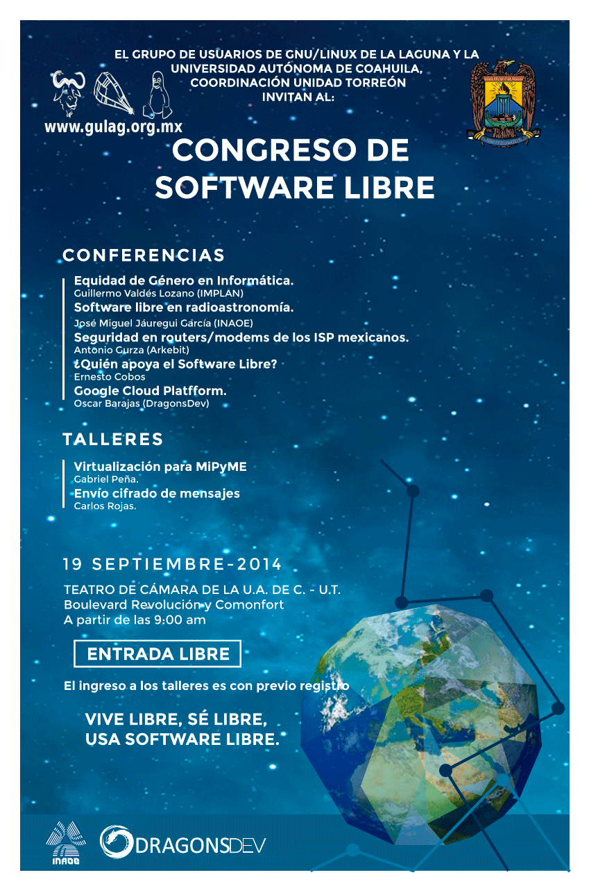

Resumen del Congreso de Software Libre 2014
Por Osvaldo, 2014-09-20 22:00

El pasado 19 de septiembre se llevó a cabo el VIII aniversario del Grupo de Usuarios de GNU/Linux de La Laguna (GULAG), y como siempre se realizó con un ciclo de conferencias de lo mas variado, pero todas girando en torno al software libre.
En el Teatro de Cámara, ubicado en el interior de la Coordinación Unidad Torreón de la Universidad Autónoma de Coahuila, se inicio con la conferencia “(In)Seguridad en routers/modems de los ISP mexicanos” impartida por Antonio Gurza quien explicó varios conceptos que mantuvieron interesados a los asistentes.
Siguió el turno a Guillermo Valdés Lozano con la conferencia “Equidad de Género en Informática” quien puso a pensar a los asistentes y los invitó a fomentar la equidad de género en todos los ámbitos.
José Miguel Jáuregui García fue el invitado quien nos expuso el tema “Software libre en radioastronomía” hablándonos del inicio de dicha área, del trabajo realizado y lo que falta por hacer, en donde se puede emplear el talento regional en el área de la informática y del software libre.
“Google Cloud Plataform” fue el tema de Oscar Barajas quien invitó a usar dicha plataforma para optimizar recursos y usando las virtudes de la misma.
El cierre del ciclo de conferencias corrió por parte de Ernesto Cobos con la conferencia “¿Quién apoya el Software Libre?” hablando de las virtudes de distintas empresas que usan el software libre así como a las personas que, con experiencia comprobable, es seleccionada para distintos trabajos.
Al término de las conferencias los asistentes continuaron aprendiendo gracias a los talleres que les siguieron.
Uno de ellos fue “Virtualización para MiPyME” impartido por Gabriel Peña quien enseñó como virtualizar un sistema operativo propietario para usar después las herramientas necesarias para hacer las declaraciones correspondientes al SAT.
“Envío codificado de mensajes” fue el otro taller que aprovecharon los asistentes quienes aprendieron de Carlos Rojas, de una manera sencilla, los elementos necesarios para comunicarse de una manera diferente.
Como cada año, tanto los talleres como las conferencias se impartieron sin costo alguno para los asistentes.
Gracias a todos por su asistencia.
Vive libre, sé libre, usa software libre.
* Artículo publicado originalmente en el sitio del GULAG el 20 de septiembre del 2014.